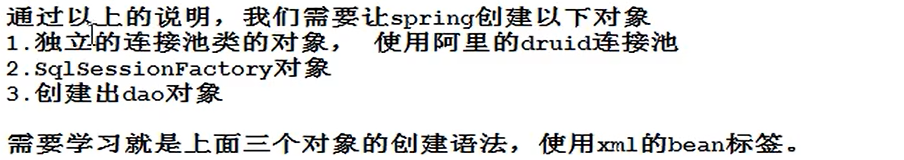

把mybatis和spring集成在一起，像一个框架一样使用。
用的技术是：ioc；
为什么ioc可以把mybatis和spring集成在一起？
因为ioc可以创建对象，可以把mybatis框架中的对象交给spring统一创建，开发人员从spring中获取对象。

Spring整合Mybatis
开发步骤：


加入依赖
<!--Spring依赖-->
<dependency>
<groupId>org.springframework</groupId>
<artifactId>spring-context</artifactId>
<version>5.2.5.RELEASE</version>
</dependency>
<!--事务依赖-->
<dependency>
<groupId>org.springframework</groupId>
<artifactId>spring-tx</artifactId>
<version>5.2.5.RELEASE</version>
</dependency>
<dependency>
<groupId>org.springframework</groupId>
<artifactId>spring-jdbc</artifactId>
<version>5.2.5.RELEASE</version>
</dependency>
<!--Mybatis和spring集成的依赖-->
<dependency>
<groupId>org.mybatis</groupId>
<artifactId>mybatis-spring</artifactId>
<version>1.3.1</version>
</dependency>
<!--mysql驱动-->
<dependency>
<groupId>mysql</groupId>
<artifactId>mysql-connector-java</artifactId>
<version>5.1.9</version>
</dependency>
<!--阿里公司的数据库连接池-->
<dependency>
<groupId>com.alibaba</groupId>
<artifactId>druid</artifactId>
<version>1.1.12</version>
</dependency>
mybatis主配置文件
创建spring的配置文件：声明mybatis的对象交给spring对象创建
1>数据源DataSource（通过spring创建druid连接池）
github 官网
<!--声明数据源，作用是连接数据库的-->
<bean id="myDataSource" class="com.alibaba.druid.pool.DruidDataSource" init-method="init" destory-method="close">
<set注入给DruidDataSource提供连接数据库的信息>
<property name="url" value="">
<property name="username" value="">
<property name="password" value="">
<property name="maxActive" value="">
</bean>
2>SqlSessionFactoryBean(org.mybatis.spring)
<bean id="sqlSessionFactory" class="SqlSessionFactoryBean">
<!--set注入，把数据库连接池付给了dataSource属性-->
<property name="dataSource" ref="myDataSource">
<!--mybatis主配置文件的位置,value写的是主配置文件路径-->
<!--configLocation属性是Resource类型，是spring中的接口，用来读取配置文件的，它的赋值，使用value，指定文件的路径：classpath：表示文件的位置-->
<property name="configLocation" value="classpath:文件路径">
</bean>
3>创建dao类
<
创建dao对象，使用SqlSession的getMapper（dao.class）
MapperScannerConfigurer:在内部调用getMapper()生成每个 dao接口的代理对象
>
<bean class="org.mybatis.spring.mapper.mapperScannerConfigurer">
<!--指定SqlSessionFactory对象的id-->
<property name="sqlSessionFactoryBeanName" value="sqlSessionFactory">
<指定包名，dao接口所在的包名,MapperScannerConfigurer会扫描这个包中的所有接口， 把每个接口都执行一次getMapper()方法，得到每个接口的dao对象。创建好的dao对象是放到spring的容器中的。>
<property name="basePackage" value="包名">
</bean>
spring和mybatis整合之后，事务是自动提交的。无需执行SqlSession.commit();
使用属性配置文件
<context:property-placeholder location="classpath:文件路径">
<bean id="myDataSource" class="com.alibaba.druid.pool.DruidDataSource" init-method="init" destory-method="close">
<set注入给DruidDataSource提供连接数据库的信息>
<!--使用属性配置文件中的数据，语法${key}-->
<property name="url" value="${}">
<property name="username" value="${}">
<property name="password" value="${}">
<property name="maxActive" value="${}">
</bean>